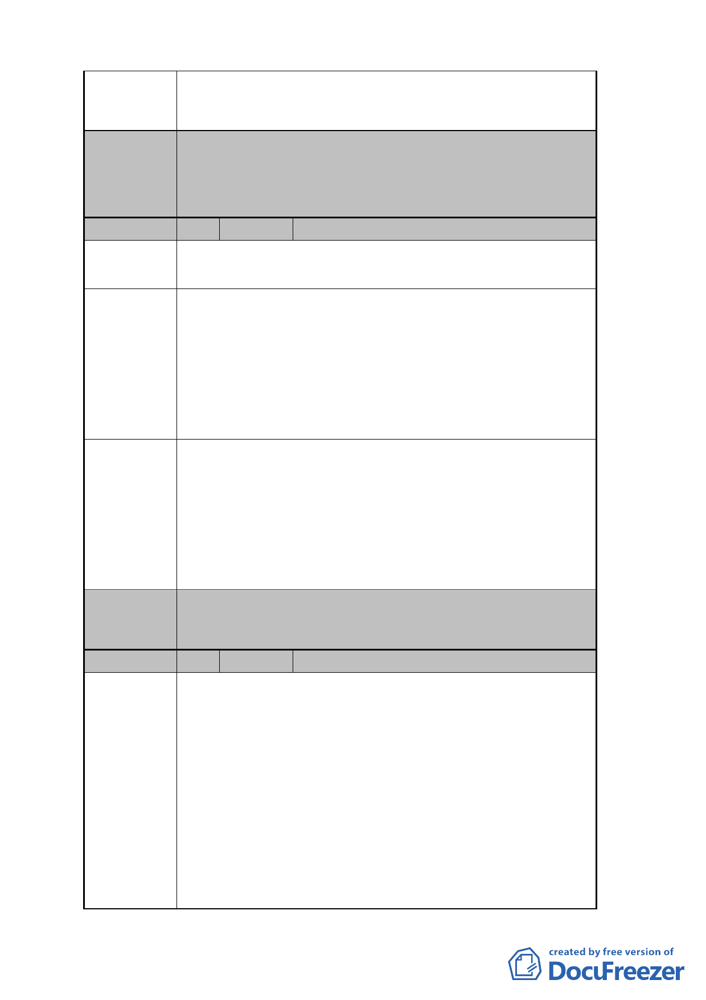

案開發之可行性。
3.期望政府積極介入協助本更新案。
委員會
決議
編號
陳情位置
本案同意申請單位為現地保留龍興宮，變更座落分區
「住三」為「住三（特）」，除依管制規則第三種住宅區規
定外，另允許第 44 組宗祠宗教建築使用。至於現行「住
三之一」則維持原使用分區。
4 陳情人 許彩秀
中正區永昌段四小段 81、81-1 地號
中正區和平西路 2 段 70 巷 8 弄 16 號
陳情理由
建議辦法
委員會
決議
1.本案周邊計畫道路均未打通，社區內現有巷道狹小，消
防救災不易，公共安全堪慮。
2.本案屬於完整街廓整體開發，三元街進深 30 公尺，其
高度比需受次寬道路之限制，將影響本案因配合國有土
地分配辦公空間後高樓層住宅規劃之完整性及地面層
開放空間配置之合理性。
3.周邊地區停車位嚴重不足。
1.建議放寬地下層開挖限縮與退縮規定，有助本案加速更
新，以解決本地區公共安全堪慮，及停車位嚴重不足問
題。
2.建議回歸建築技術規則 16 條次寬道路只限路心 10 公尺
而非 12 公尺，及本市都更自治條例 18 條規定，排除土
管規則 13 條第 1 項第 2 款之適用。
3.建議多增設停車位。
本案有關申請停獎事宜依現行規定辦理。
編號
陳情理由
5 陳情人 財政部國有財產局臺灣北區辦事處
1.查金山石公司擔任實施者擬具之「擬定臺北市中正區永
昌段四小段 48 地號等 138 筆土地都市更新事業計畫
案 」， 本 處 前 以 98 年 3 月 6 日 台 財 產 北 改 字 第
09800037991 號函復都市更新處表示，範圍內國有土地
處理方式為參與權利變換，按應有之權利價值選擇分配
更新後之房地。鑑於後續本處分配更新後房地擬規劃作
為辦公廳舍使用，倘限縮建築基地開挖率以不超過 55
％為原則，致該更新案無法申請停車容積獎勵，恐不敷
洽公民眾停車空間之需求。
2.另有關本局經管之同小段 113、114、115、116、117 地
號 5 筆土地容積併入更新建築基地乙節，查金山石公司
- 25 -